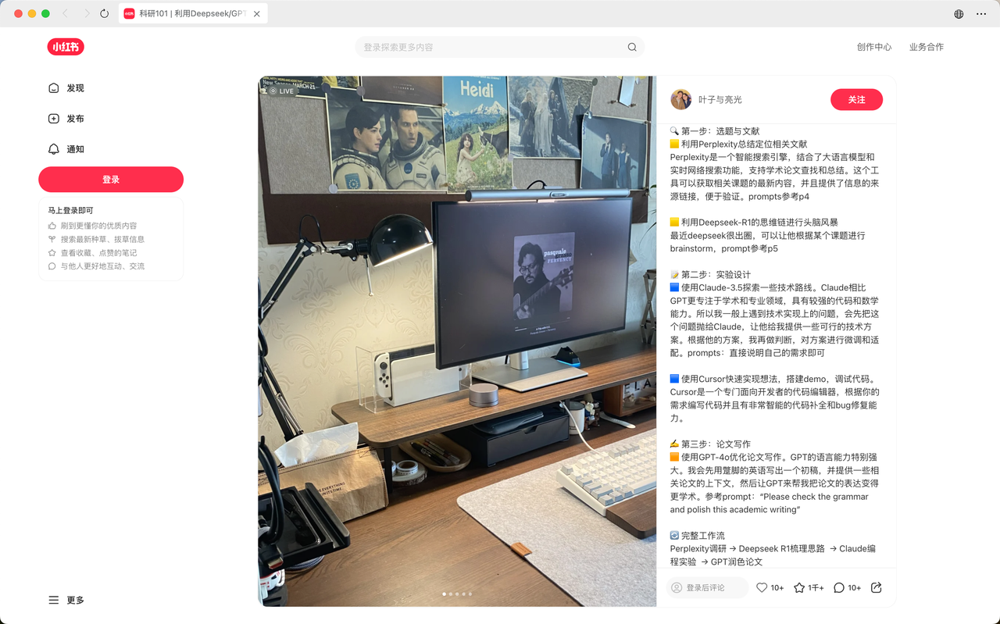

AI辅助论文写作工作流
从小红书到公众号，探索AI如何改变我们的学术写作方式
AI辅助论文写作工作流
从小红书看到的灵感到实际应用的全流程

1
文献收集与整理
使用AI工具快速搜索、筛选和整理相关文献，自动生成文献综述
2
结构规划
AI辅助生成论文大纲，确保逻辑清晰、结构完整
3
内容生成
根据大纲和关键点，AI协助生成初稿内容
4
润色与优化
AI辅助改进语言表达，确保学术规范性
5
格式调整
自动调整格式，确保符合学术规范
传统论文写作的痛点
文献收集与整理
面对海量的学术文献，人工收集和整理效率低下，容易遗漏重要信息
结构组织
论文结构混乱，逻辑不清晰，难以构建完整的论证体系
语言表达
学术语言表达不够专业，难以准确传达研究成果
时间成本
传统写作方式耗时长，效率低，难以在短时间内完成高质量论文
实践案例：从论文到公众号

AI辅助公众号写作实践
以一篇关于AI在教育领域应用的公众号文章为例，展示AI辅助写作的完整流程：
- 问题分解与目标确定
- 核心观点提炼
- 目标受众分析
- 分段内容生成
- 整体结构优化
- 语言润色完善